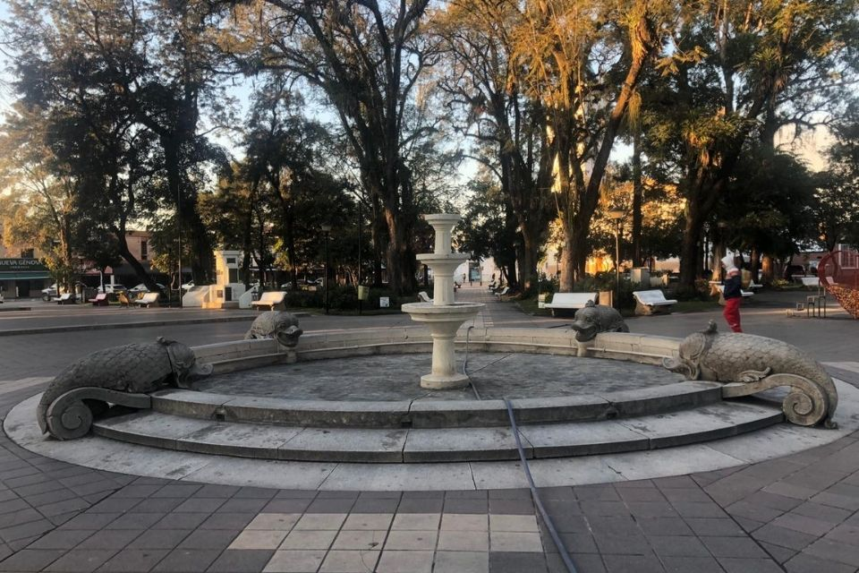
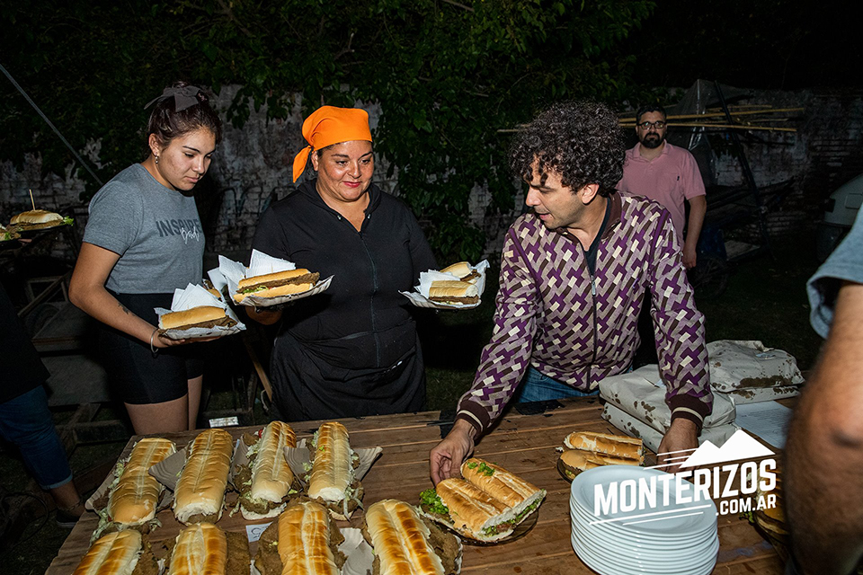
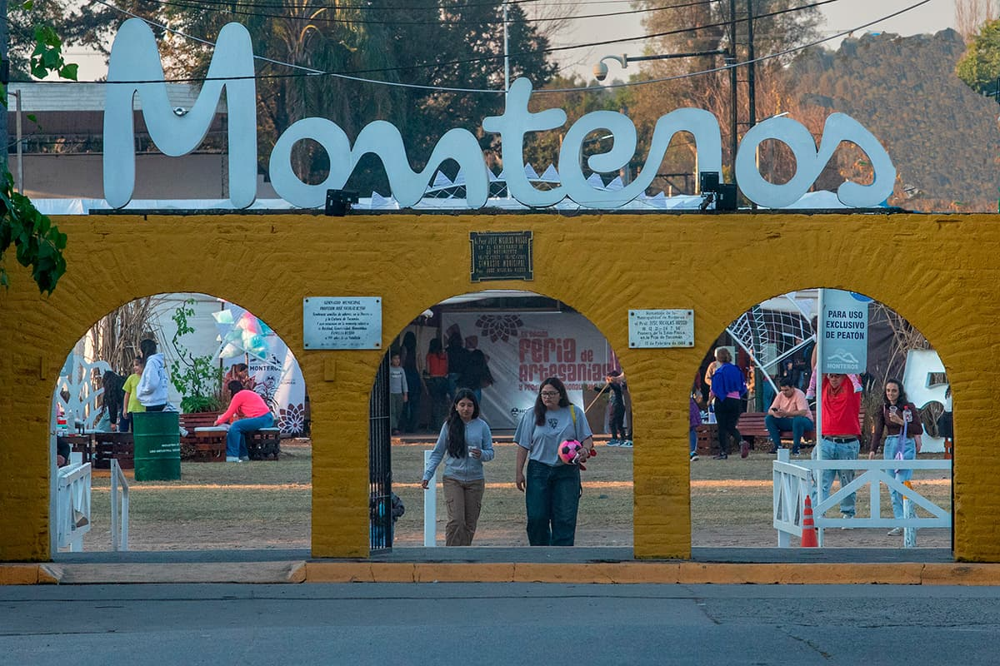

Fortaleza del Folklore
Descubrí Monteros, una ciudad del sur tucumano reconocida como la Fortaleza del Folklore y Capital Nacional de la Randa.

Conocé plazas, iglesias, espacios naturales y lugares históricos de Monteros y sus alrededores.

Descubrí los sabores tradicionales de Monteros, sus comidas típicas y las recetas que forman parte de la tradición gastronómica local.

Conocé las expresiones culturales, artísticas y las historias que forman parte de la identidad y la memoria de Monteros.